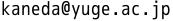

基本情報
- 氏名 : 金田伸 (Shin Kaneda)
- 所属01 : 広島大学 大学院先進理工系科学研究科 先進理工系科学専攻 数学プログラム 博士課程後期
- 所属02 : 弓削商船高等専門学校 総合教育科 助教
- 生年月日 : 1996年(平成8年)1月23日
職歴
学歴
- 2014年(平成26年)3月1日
広島県立福山誠之館高等学校 卒業
- 2018年(平成30年)3月23日
岡山大学 理学部 数学科 卒業
- 2020年(令和2年)3月25日
岡山大学 大学院自然科学研究科 数理物理科学専攻 博士課程前期 修了
連絡先

その他